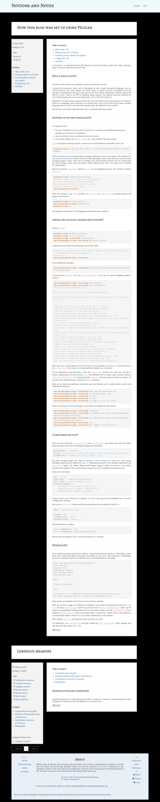
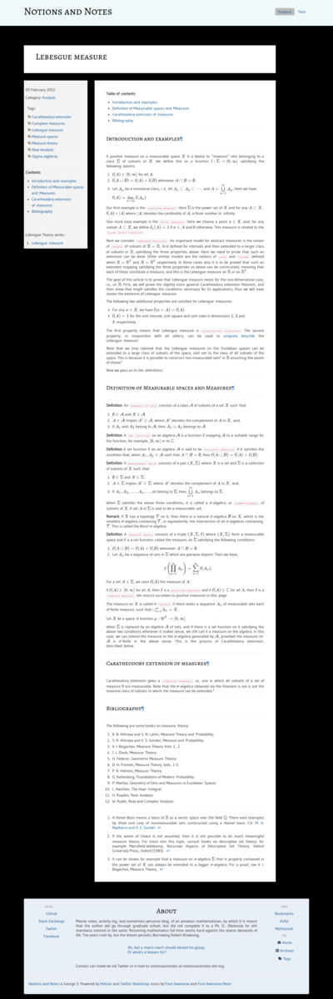

In this post it is documented how this blog was constructed using a static site maker, meaning, there is no server-side processing of data.
Why a static site?
The three main reasons are, simplicity, control, and because I can do it.
Compared to wordpress, static sites in Markdown or other simple formatting languages such as reStructuredText, are much simpler and much easier to control, and less susceptible to version changes. Pre-publication testing is easy and can be done offline. Deploying is simply copying the files to a server. There is no PHP or database setup required. The hosting resources required are very small, allowing one to use very cheap hosts such as NearlyFreeSpeech.
Markdown is chosen because various math sites use it and pelican was chose because it is Pythonic. Python is a language I was interested in at various times, and I do not have time to learn another language such as Ruby to use alternate popular static site platforms such as Jekyll.
Also all this is very well-integrated with Linux, my favorite operating system.
Setting up pip and virtualenv
It is expected that:
- The user is proficient in Linux and the terminal. It is assumed in the following that we are working on an Ubuntu 14 installation.
- User is proficient in bash and knows how to use python.
- User knows utilities such as
git,make, etc., and is familiar with web servers.
pip is the python package installer. It takes care of all the Pythonic dependency hell. Use:
~$ sudo apt-get install -y python-pip python-virtualenv virtualenvwrapper
We do not want to do any global python package installations from now onwards. The method is to use virtual environments in which the user installs packages inside a local directory and runs them through wrapper scripts. There can be multiple such environments and the user can switch back and forth between them, with parameters being different each time. This gives much flexibility for development.
Now we create the virtualenv named pelican for our blogging purposes. The machine is named soliloquy.
$ mkvirtualenv pelican
Running virtualenv with interpreter /usr/bin/python2
New python executable in pelican/bin/python2
Also creating executable in pelican/bin/python
Installing setuptools, pip...done.
(pelican)~$
Note the change in the bash prompt. Use workon and deactivate to activate/deactive the python environment:
~$ workon pelican
(pelican)~$ deactivate
~$
This sequence will be part of the blogging workflow whenever required.
Installing pelican, themes and plugins
Install pelican:
~$ mkdir ~/work/blog
~$ cd ~/work/blog
~/work/blog$ workon pelican
(pelican)~/work/blog$ pip install pelican
It downloads and install many packages and finishes with:
Successfully installed pelican jinja2 blinker pygments docutils python-dateutil pytz six feedgenerator unidecode markupsafe
Cleaning up...
(pelican)~/work/blog$
Now we have pelican installed!

Install additional packages:
(pelican)~/work/blog$ pip install Markdown beautifulsoup4 typogrify Pillow webassets
Create directory pelican and run pelican-quickstart to set up the pelican blogging platform inside it:
(pelican)~/work/blog$ mkdir pelican
(pelican)~/work/blog$ pelican-quickstart
Welcome to pelican-quickstart v3.5.0.
This script will help you create a new Pelican-based website.
Please answer the following questions so this script can generate the files needed by Pelican.
> Where do you want to create your new web site? [.] pelican
> What will be the title of this web site? Notions and Notes
> Who will be the author of this web site? George S.
> What will be the default language of this web site? [en]
> Do you want to specify a URL prefix? e.g., http://example.com (Y/n)
> What is your URL prefix? (see above example; no trailing slash) http://www.notionsandnotes.org
> Do you want to enable article pagination? (Y/n)
> How many articles per page do you want? [10]
> Do you want to generate a Fabfile/Makefile to automate generation and publishing? (Y/n)
> Do you want an auto-reload & simpleHTTP script to assist with theme and site development? (Y/n)
> Do you want to upload your website using FTP? (y/N)
> Do you want to upload your website using SSH? (y/N) y
> What is the hostname of your SSH server? [localhost] notionsandnotes
> What is the port of your SSH server? [22]
> What is your username on that server? [root]
> Where do you want to put your web site on that server? [/var/www]
> Do you want to upload your website using Dropbox? (y/N)
> Do you want to upload your website using S3? (y/N)
> Do you want to upload your website using Rackspace Cloud Files? (y/N)
> Do you want to upload your website using GitHub Pages? (y/N)
Done. Your new project is available at /home/george/work/blog/pelican
Note that, here, the full details of the ssh server are not provided. In my case, it is stored instead
in the ~/.ssh/config file, as per ssh config
directives. Replace it as necessary.
We do typesetting using Markdown. Under the ~/work/blog directory, we store the site files
in various subdirectories of the directory raw. The published site is stored under another
directory www.notionsandnotes.org. As mentioned earlier, pelican directory stores the files
for pelican. So we have three subdirectories in total for the blog directory.
Now set up these two additional directories and also initialize git to enable version control and rollbacks(if required):
(pelican)~/work/blog$ mkdir www.notionsandnotes.org
(pelican)~/work/blog$ mv pelican/content ./raw
(pelican)~/work/blog$ git init .
(pelican)~/work/blog$ git add .
(pelican)~/work/blog$ git commit -m "Initial commit"
Now to use pelican themes and plugins, clone these from github as submodules:
(pelican)~/work/blog$ cd pelican
(pelican)~/work/blog$ git submodule add https://github.com/getpelican/pelican-themes.git themes
(pelican)~/work/blog$ git submodule add https://github.com/getpelican/pelican-plugins.git plugins
(pelican)~/work/blog$ cd ..
(pelican)~/work/blog$ git -commit -m "Themes+Plugins"
Configuration file
There are two config files, pelicanconf.py and publishconf.py. We mostly work with the latter.
Both are python files. Set the following configuration directives:
PLUGIN_PATHS = ['./plugins']
PLUGINS = ['extract_toc','render_math','disqus_static','better_figures_and_images']
MD_EXTENSIONS = ['codehilite','extra','smarty', 'toc']
We have included plugins for: table of contents, LaTeX rendering of math, etc., and similar Markdown extensions are added too. The toc Markdown extension
is for example required for the extract_toc plugin. The “Better Figures and Images” plugin is taken from Duncan Lock,
whose site was most helpful for this pelican setup. Plugin assets is for
minification of javascript etc..
Now set the directives:
PATH = '../raw'
OUTPUT_PATH = '../www.notionsandnotes.org/'
STATIC_PATHS = ['extra', 'images', 'pdfs']
EXTRA_PATH_METADATA = {
'extra/robots.txt': {'path': 'robots.txt'},
'extra/favicon.ico': {'path': 'favicon.ico'},
'extra/htaccess': {'path': '.htaccess'}
}
Create a favicon and robots.txt as required. A custom 404 page can be embedded via a .htaccess configuration directive. This is ours!
We use the built-texts theme and the following directives are added as data for it:
THEME = 'themes/built-texts'
COLOPHON = True
COLOPHON_TITLE = 'About'
COLOPHON_CONTENT = "Mainly...."
Edit the Makefile as follows:
INPUTDIR=$(BASEDIR)/../raw
OUTPUTDIR=$(BASEDIR)/../www.notionsandnotes.org
Add in other parameters, such as the ssh hostname, as required.
Workflow
First, enable the virtual environment ‘pelican’ using ‘workon’(and remember to ‘deactivate’ it later. Posts are created and edited using plain text editors in files with *.md extensions, in Markdown format. For example, these are the first few lines of the Markdown for this page:
Title: How this blog was set up using Pelican
Date: 2015-04-10
Category: Tech
Subcategory: Blogging
Tags: pelican, python
Slug: pelican-setup
[TOC]
**Table of contents**
[TOC]
In this post it is documented how this blog was constructed using a static
site maker, meaning, there is no server-side processing of data.
More details are available at the Pelican Documentation website. The whole source of this website is uploaded to a github repository where more examples and details may be found.
After the articles or pages are edited, the compilation and static site generation are done by make html.
Running make devserver will fire up a local server at http://localhost:8000, which can be used for
pre-publication viewing. Note that this will require fixing up of the pelicanconf.py file in addition
to publishconf.py which was edited earlier. In particular, relative URLs to be enabled in pre-publication
mode in order for us to be able to follow links in the browser.
After viewing, Ctrl + C will stop the server and return to shell.
For publication, run make publish, and later upload via make rsync_upload, which uploads only the
necessary files using
rsync + ssh.
Screenshots:
Here are the screen captures of a first built of this site with a (slightly modified) built-texts theme, with some css additions. The captures were done using a Google Chrome extension by Peter Cole.
Index page screenshot:
 Click for expanding the thumbnail to actual size.
{kind=link}
Below is the next screenshot of how the article on Lebesgue measure and construction via Caratheodory extension theorem, was rendered.
 Click for actual size image.